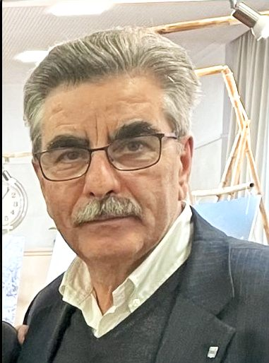

Dr. Silvia Steiner
Regierungsrätin Kanton Zürich
«André ist ein Gewinn für die Mitte und die Stadt Winterthur. Ich schätze sein Engagement für die Bildung im Kanton Zürich.»
Referenzen
Das sagen Menschen aus Politik, Sport und Wirtschaft über ihn.
Regierungsrätin Kanton Zürich
«André ist ein Gewinn für die Mitte und die Stadt Winterthur. Ich schätze sein Engagement für die Bildung im Kanton Zürich.»
Stadtpräsident von Winterthur
«André kenne ich als engagierten, zuverlässigen und vertrauensvollen Parteikollegen.»
Nationalrätin und Fraktionspräsidentin
«Der Sport verbindet Menschen über Generationen hinweg genauso wie gute Politik. André lebt diesen Zusammenhalt im Einsatz für Vereine, Ehrenamt und Bewegung. Deshalb ist André für mich eine starke Wahl für das Stadtparlament.»
Jugendarbeiterin, Hauptleiterin Kinder- und Jugendtreff Gutschick
«Aus meiner Tätigkeit im Quartier Gutschick kenne ich André als engagierten Menschen, der sich für das Wohl der Kinder, Jugendlichen und Familien einsetzt. Interessiert und offen geht er auf die Anliegen der Menschen ein.»

Unternehmer in Winterthur
«André ist ein Mensch, den ich sehr schätze. Er hat einen ausgeprägten Gerechtigkeitssinn verbunden mit der Gabe, das Wesentliche zu erkennen und danach zu handeln. Engagiert und zugleich umsichtig.»
Primarlehrerin
«Seit meiner Kindheit begleitete und betreute mich André im Karate-Club. Ich schätzte seine Unterstützung und dass er stets an mich geglaubt hat.»
Ehrenpräsident Swiss Karate Federation
«André sehe ich oft als nationalen Schiedsrichter an verschiedenen Turnieren. Ich schätze sein Engagement und seinen Einsatz für unseren Sport.»

Rentner
«André ist einer, der immer ein offenes Ohr hat für Anliegen aller Menschen.»